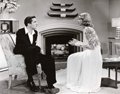
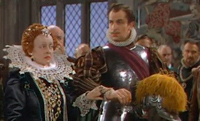
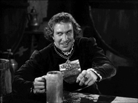
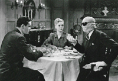
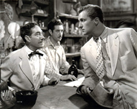
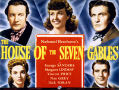
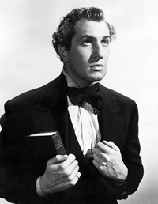
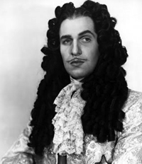
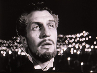
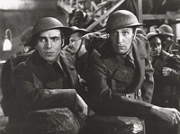
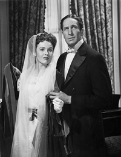
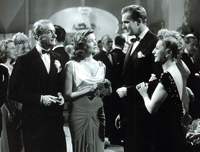
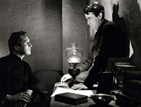
Ernst Lubitsch
Otto Preminger
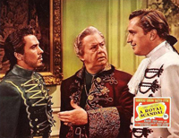
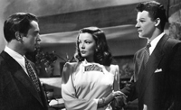
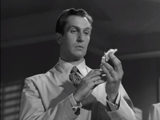
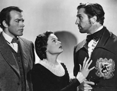
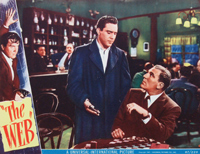
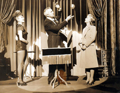
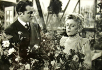
When Irish immigrant Timothy Moore (Albert Sharpe) and his singing daughter Rosie (Deanna Durbin) arrive in New York City in the 1870s hoping for a better life, they are set upon immediately by Rogan (Tom Powers), one of Boss Tweed's men. Boss Tweed is a corrupt politician working to re-elect bribed candidates in order to continue exploiting the coffers of the city and state. The one voice opposing Boss Tweed's organization is John Matthews (Dick Haymes), a young naïve reporter for The New York Times.
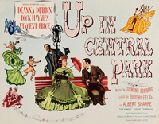
The world of freight handlers Wilbur Grey and Chick Young (Abbott and Costello) is turned upside down when the remains of Frankenstein's monster (Glenn Strange) and Dracula (Bela Lugosi) arrive from Europe to be used in a House of Horrors. Dracula awakens and escapes with the weakened monster, who he plans to re-energise with a new brain. Larry Talbot, the Wolfman (Lon Chaney Jr.) arrives from London in an attempt to thwart Dracula. Dracula's reluctant aide is the beautiful Dr. Sandra Mornay and they abduct Wilbur for his brain and recharge the monster in preparation for the operation. Chick and Talbot attempt to find and free Wilbur, but when the full moon rises all hell breaks loose with the Wolfman, Dracula and Frankenstein all running rampant.
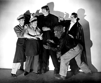
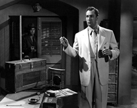
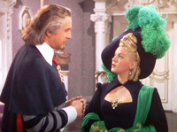
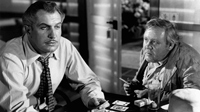
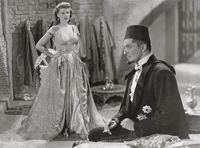
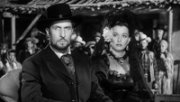
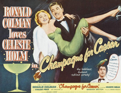
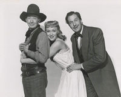
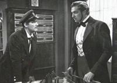
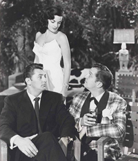
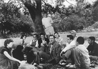
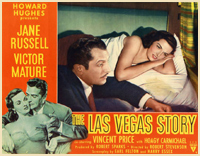
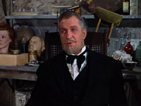
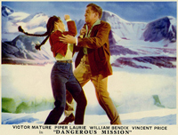
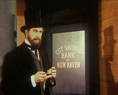
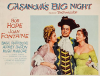
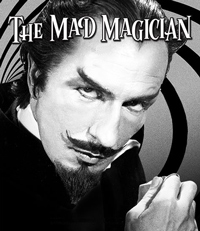
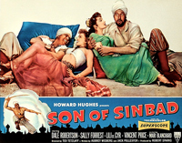
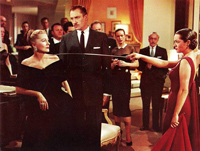
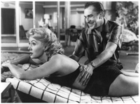
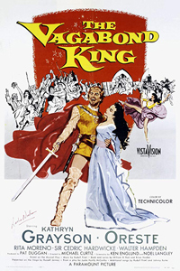
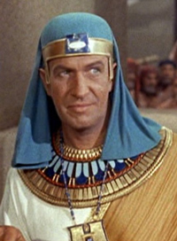
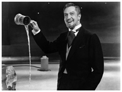
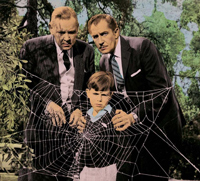
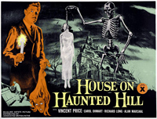
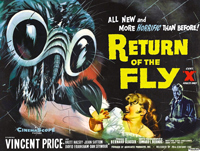
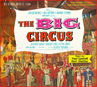
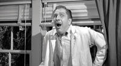
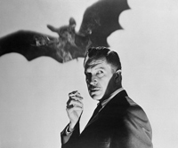
An American geologist accidentally discovers oil in the Turkish mountains. An assassin is sent to eliminate him because of this discovery. He boards a passenger boat to try to escape. However, one of the passengers is the assassin. Also starring Donald Pleasence, Stanley Holloway, Shelley Winters, Joseph Wiseman, Ian McShane and Zero Mostel.